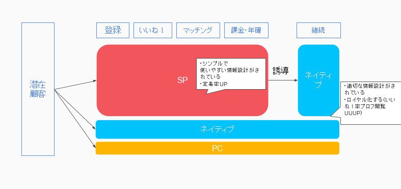

YUUKI SAWASATOUXUI Designer / WEB Designer / Director
サービス戦略構築や競合調査、分析、ユーザー体験構築等の上流工程から、UI設計や表層デザイン、コーディングまで一連の工程を経験しておりますので、サービスやコンテンツの本質的価値を見出した上で、ユーザーにとって使い勝手の良いUXUIを構築することを強みとしております。
沢里侑輝 1988年生まれ
- 出身地：埼玉生まれ川越育ち
- 好きなもの：野球、スノボー、スポーツ観戦、映画、テレビドラマ、旅行
- 苦手なもの：寒すぎるところ
○2007年4月
某建設機械メーカー製造工場にて、組立工として様々な機械の製造に携わる。
○2008年11月〜
web制作の学校入学。Illustrator・photoshopなどのデザインツールやhtml・cssの基礎を学ぶ。
○2009年11月〜
株式会社エムティーアイ入社。様々な自社コンテンツ・社外クライアント案件に携わる。デザイン・Webフロントエンドの教育も担当。
○2015年12月〜
株式会社エウレカにて、UXUIデザイナー、PMとして自社サービスの運用・新機能開発に携わる。インターン生の教育・マネジメントも経験。
○2017年2月〜：株式会社アイスタイル
新規開発においてのコンセプトデザインやユーザー体験構築、プロトタイプ作成、他デザイナーや外部委託のディレクション、マネジメントなど経験。
得意分野・強み
PairsではFacebook広告からのSPサイトへの流入数が圧倒的でありますが、ネイティブAppのほうが、読み込みが早かったり、通知で「被いいね！」や「メッセージ」などに気づきやすかったりと使い勝手が良いです。
また、Appをダウンロードするユーザーは自分の意志でダウンロードしているため熱量が高く、ロイヤル化しやすいことから、
SPサイトの役割は、サイトを利用してもらうことで定着率を上げ、その後ネイティブAppに誘導するという役割を担わせることに決定しました。

ご意見、お問い合わせなど何かありましたら、以下よりご連絡ください。